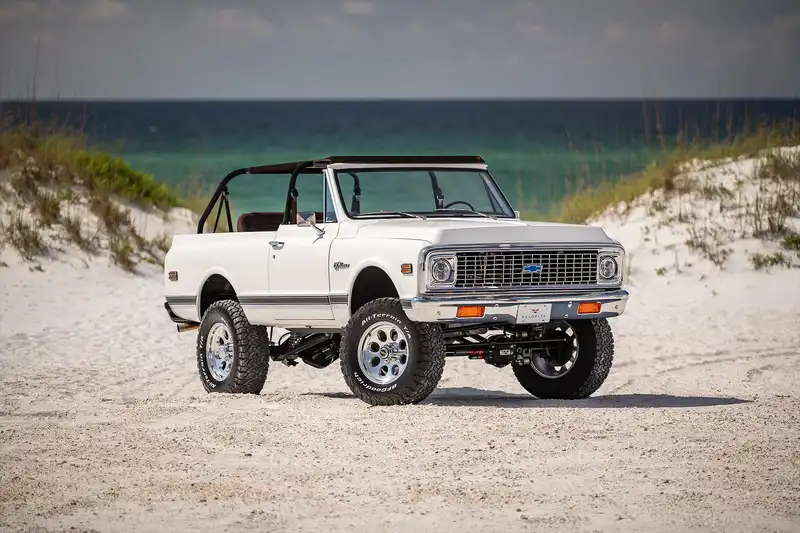

Information for a dealer near you!!
305 Battle Creek Rd
South Pittsburg, TN 37380
(423)-228-0900
My #1 favorite blazer
My favorite blazer is the first generation k5 blazer. Owners could choose if they wanted just a driver seat or have five seats in it!! The chassis was plucked from the C/K line of trucks meaning it was built tough. The blazer could come with a standard 250 cubic-inch straight six, or upgrade to the 307 cubic-inch V8 or the icnonic 350 small block. I would have personally upgraded to the V8. I love how the orginal blazers look. You can tell they were made for any terrain and still be a comfortable ride for the era. GM knew what they were going for while making a family and enthusiast vehicle.
My 2nd favorite Blazer
My second favorite blazer is the 2020 blazer RS. I ike it for its sporty look and its comfortablity. The Blazer would make a great family car if you have a couple kids. It is good on gas and reliable. It is one of the safest vehicles you can get for you and your family. It comes with a 3.6-liter V6 engine that produces 308 horsepower and 270 lb-ft of torque. So it is a decent sporty vehicle for those who like to drive fast. The only reason it is my second favorite is because you can't beat old school in my opinion. They just don't make stuff like they used to.